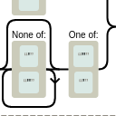

Docker
Images, Container, Skripts,...
FreePad im Docker-Zoo
28.10.2023

Ein neues Projekt ist in meinen Docker-Zoo eingezogen
Neue Version plantumlinterfaceproxy
25.09.2023

Ich musste neulich mein Projekt plantumlinterfaceproxy aktualisieren
BoulderDash im Docker-Zoo
23.05.2023

Hin und wieder kriege ich einen kleinen Retro-Flash. Dann beginne ich, nach Computerspielen aus meiner Jugendzeit zu suchen und versinke in Erinnerungen. Eines meiner ersten - wenn nicht sogar das erste - war BoulderDash. Das lernte ich auf einem Atari kennen und kurz danach auch auf einem KC 85/4.
Mealie im Docker-Zoo
30.04.2023

Es ist wieder mal ein neuer Container in meinem Docker-Zoo eingezogen
PairDrop im Docker-Zoo
15.04.2023

Es ist wieder mal ein neuer Container in meinem Docker-Zoo eingezogen
MITMProxy im Docker-Zoo
02.04.2023

Es ist wieder mal ein neuer Container in meinem Docker-Zoo eingezogen
Filestash im Docker-Zoo
08.11.2022

Und wieder ist ein neuer Container in meinen Docker-Zoo aufgenomen worden.
Visual Studio Code im Browser
03.10.2022

Und wieder ist ein neuer Container in meinen Docker-Zoo aufgenomen worden.
RustDesk im Docker-Zoo
27.09.2022

Und wieder ist ein neuer Container in meinen Docker-Zoo aufgenomen worden.
CI/CD Deployment mittels docker-compose aus Gitlab heraus
21.09.2022
Ich habe bisher Projekte, aus denen ein Webdienst wurde immer von Hand auf den entsprechenden Docker-Server deployt. Das musste anders werden, daher habe ich mich entschieden, eine entsprechende CI/CD-Pipeline in Gitlab zu bauen, die das für mich erledigt.
Ältere Artikel
Hier geht es zum Archiv der Artikel, die vor dem 19.09.2022 verfasst wurden:
- MailHog im Docker-Zoo
- OpenProject als Docker-Container
- ...


Tags
Android Basteln C und C++ Chaos Datenbanken Docker dWb+ ESP Wifi Garten Geo Git(lab|hub) Go GUI Gui Hardware Java Jupyter Komponenten Links Linux Markdown Markup Music Numerik PKI-X.509-CA Python QBrowser Rants Raspi Revisited Security Software-Test sQLshell TeleGrafana Verschiedenes Video Virtualisierung Windows Upcoming...
Manche nennen es Blog, manche Web-Seite - ich schreibe hier hin und wieder über meine Erlebnisse, Rückschläge und Erleuchtungen bei meinen Hobbies.
Wer daran teilhaben und eventuell sogar davon profitieren möchte, muß damit leben, daß ich hin und wieder kleine Ausflüge in Bereiche mache, die nichts mit IT, Administration oder Softwareentwicklung zu tun haben.
Ich wünsche allen Lesern viel Spaß und hin und wieder einen kleinen AHA!-Effekt...
PS: Meine öffentlichen GitHub-Repositories findet man hier - meine öffentlichen GitLab-Repositories finden sich dagegen hier.